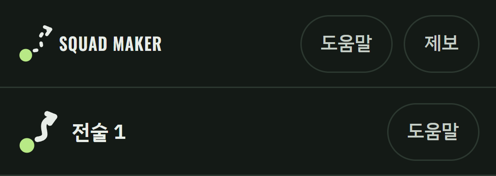
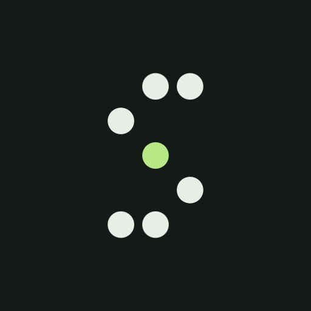
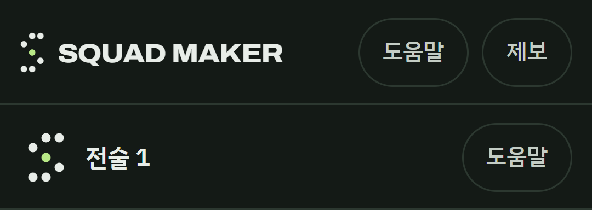
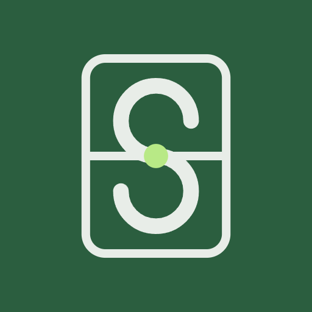
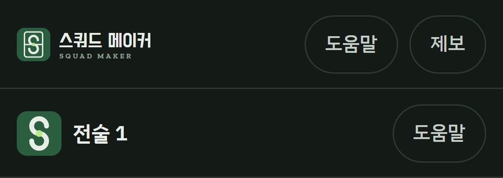

<title>스쿼드 메이커 브랜드 시안</title>
<link rel="preconnect" href="https://fonts.googleapis.com">
<link rel="preconnect" href="https://fonts.gstatic.com" crossorigin>
<link rel="stylesheet" href="https://fonts.googleapis.com/css2?family=IBM+Plex+Sans+KR:wght@400;500;700&family=Oswald:wght@600&display=swap">
<style>
/* Layout: one column; each concept is a band with [splash GIF in a phone frame | icon + header logo + notes]. Single dark look matching the app. */
:root {
  --bg: #141a16; --surface: #1c241e; --line: #2c3830; --fg: #e8ede8; --muted: #a8b6ac; --accent: #b8e986; --accent-ink: #1a2412; --pitch: #2b5e3f;
  --font: 'IBM Plex Sans KR', 'Noto Sans KR', 'Malgun Gothic', system-ui, sans-serif;
  --num: 'Oswald', 'Bahnschrift', 'Arial Narrow', sans-serif;
  color-scheme: dark;
}
* { box-sizing: border-box; }
body { margin: 0; background: var(--bg); color: var(--fg); font-family: var(--font); line-height: 1.6; }
.wrap { max-width: 1120px; margin: 0 auto; padding-inline: 20px; padding-block: 40px 72px; display: grid; gap: 56px; }
h1, h2, h3 { margin: 0; line-height: 1.25; text-wrap: balance; }
h1 { font-size: clamp(28px, 4.4vw, 40px); }
h2 { font-size: 24px; }
p { margin: 0; max-width: 68ch; }
.lead { display: grid; gap: 12px; }
.lead p { color: var(--muted); }
.flow { display: grid; grid-template-columns: repeat(2, minmax(0, 1fr)); gap: 12px; }
.flow div { background: var(--surface); border: 1px solid var(--line); border-radius: 14px; padding: 14px 16px; display: grid; gap: 4px; }
.flow b { font-size: 15px; }
.flow span { color: var(--muted); font-size: 14px; }
.concept { display: grid; gap: 20px; padding-top: 32px; border-top: 1px solid var(--line); }
.concept header { display: flex; flex-wrap: wrap; align-items: baseline; gap: 8px 14px; }
.tag { font-family: var(--num); font-size: 15px; letter-spacing: 0.08em; color: var(--accent); }
.open { margin-left: auto; display: inline-flex; align-items: center; min-height: 44px; padding: 0 16px; border-radius: 10px; border: 1px solid var(--line); color: var(--fg); text-decoration: none; font-weight: 700; }
.open:hover { border-color: var(--accent); }
a:focus-visible { outline: 3px solid var(--fg); outline-offset: 3px; }
.body { display: grid; grid-template-columns: 240px minmax(0, 1fr); gap: 28px; align-items: start; }
.phone { width: 240px; aspect-ratio: 360 / 780; border-radius: 28px; overflow: hidden; border: 6px solid #0b0f0c; box-shadow: 0 0 0 1px var(--line); background: var(--bg); }
.phone img { width: 100%; height: 100%; object-fit: cover; display: block; }
figure { margin: 0; display: grid; gap: 6px; }
figcaption { font-size: 13px; color: var(--muted); }
.side { display: grid; gap: 18px; min-width: 0; }
.icons { display: flex; flex-wrap: wrap; gap: 16px; align-items: end; }
.icons img { display: block; border-radius: 22%; }
.icons .big { width: 120px; height: 120px; }
.icons .mid { width: 48px; height: 48px; }
.icons .round { border-radius: 50%; }
.header-img { width: 100%; max-width: 360px; border-radius: 10px; border: 1px solid var(--line); display: block; }
.pc { display: grid; grid-template-columns: 1fr 1fr; gap: 12px; }
.pc div { background: var(--surface); border-radius: 12px; padding: 14px 16px; display: grid; gap: 6px; align-content: start; }
.pc h3 { font-size: 15px; }
.pc ul { margin: 0; padding-left: 18px; display: grid; gap: 4px; font-size: 14px; }
.table-wrap { overflow-x: auto; background: var(--surface); border-radius: 12px; }
table { border-collapse: collapse; width: 100%; min-width: 620px; font-size: 15px; }
th, td { text-align: left; padding: 12px 14px; border-bottom: 1px solid var(--line); vertical-align: top; }
tbody tr:last-child td, tbody tr:last-child th { border-bottom: 0; }
.rec { border: 2px solid var(--accent); border-radius: 16px; padding: 22px; display: grid; gap: 10px; }
.note { color: var(--muted); font-size: 14px; }
@media (max-width: 760px) {
  .body { grid-template-columns: minmax(0, 1fr); }
  .phone { width: min(240px, 70vw); justify-self: center; }
  .pc, .flow { grid-template-columns: minmax(0, 1fr); }
  .open { margin-left: 0; }
}
</style>

<main class="wrap">
  <section class="lead">
    <h1>스쿼드 메이커 브랜드 시안</h1>
    <p>앱 아이콘, 좌상단 로고, 시작 스플래시 모션을 시안 세 가지로 만들었습니다. 세 안 모두 지금 앱의 나이트피치 색(차콜 그린, 피치 녹색, 라임 강조)을 유지하고, 마크의 아이디어와 글꼴, 모션이 다릅니다.</p>
    <div class="flow">
      <div><b>1단계 시스템 스플래시 (즉시)</b><span>Android 12 이상은 배경색과 아이콘만 표시합니다. GIF는 쓸 수 없어 정적 아이콘으로 바로 띄웁니다.</span></div>
      <div><b>2단계 앱 안 모션 인트로 (약 1.5초)</b><span>저장소 준비를 기다리는 동안 아래 GIF와 같은 모션을 보여 주고 앱 화면으로 넘어갑니다. 탭하면 건너뛰고, 동작 줄이기 설정이면 정지 로고만 보입니다.</span></div>
    </div>
  </section>

  <section class="concept" aria-labelledby="c1">
    <header><span class="tag">A</span><h2 id="c1">런 라인</h2><a class="open" href="concept-01/index.html" target="_blank" rel="noopener">시안 A 자세히</a></header>
    <p>코치가 매일 긋는 기호, "선수 한 명과 그가 뛸 점선 화살표"를 그대로 마크로 썼습니다. 점선 경로가 살짝 S로 휩니다.</p>
    <div class="body">
      <figure><div class="phone"></div><figcaption>스플래시 모션 1.4초 (GIF 30KB)</figcaption></figure>
      <div class="side">
        <div class="icons">
          <figure><figcaption>앱 아이콘</figcaption></figure>
          <figure><figcaption>48dp 원형</figcaption></figure>
        </div>
        <figure><figcaption>좌상단 로고 (모바일 28px, 아래는 심볼 단독)</figcaption></figure>
        <div class="pc">
          <div><h3>장점</h3><ul><li>앱의 핵심 동작(움직임 긋기)이 마크라 설명이 필요 없다</li><li>모션이 가장 짧고 가볍다</li><li>워드마크가 지금 앱의 Oswald를 그대로 이어받는다</li></ul></div>
          <div><h3>주의</h3><ul><li>32px 이하에서는 점선이 실선이 되어 일반 경로·배송 아이콘과 닮을 수 있다</li><li>아이콘에서 S로 읽히지는 않는다</li></ul></div>
        </div>
      </div>
    </div>
  </section>

  <section class="concept" aria-labelledby="c2">
    <header><span class="tag">B</span><h2 id="c2">포메이션 도트</h2><a class="open" href="concept-02/index.html" target="_blank" rel="noopener">시안 B 자세히</a></header>
    <p>흩어져 몸을 풀던 선수 일곱 명이 S자 대형으로 모이고, 지금 고른 선수 한 명만 라임으로 켜집니다. 앱 화면의 선수 점과 같은 언어입니다.</p>
    <div class="body">
      <figure><div class="phone"></div><figcaption>스플래시 모션 1.46초 (GIF 77KB)</figcaption></figure>
      <div class="side">
        <div class="icons">
          <figure><figcaption>앱 아이콘</figcaption></figure>
          <figure><figcaption>48dp 원형</figcaption></figure>
        </div>
        <figure><figcaption>좌상단 로고 (모바일 28px, 아래는 심볼 단독)</figcaption></figure>
        <div class="pc">
          <div><h3>장점</h3><ul><li>아이콘·헤더·보드 화면이 같은 "선수 점"으로 이어진다</li><li>모션이 가장 축구답다(선수들이 대형으로 모임)</li><li>넓은 그로테스크 워드마크로 가장 선명하다</li></ul></div>
          <div><h3>주의</h3><ul><li>점 S가 사람에 따라 점 무늬로만 읽힐 수 있다</li><li>점 격자 로고는 테크 브랜드에 흔한 계열이다</li><li>라임과 초크의 명도 차가 작아 흑백에서 선택 점이 묻힌다</li></ul></div>
        </div>
      </div>
    </div>
  </section>

  <section class="concept" aria-labelledby="c3">
    <header><span class="tag">C</span><h2 id="c3">초크 피치</h2><a class="open" href="concept-03/index.html" target="_blank" rel="noopener">시안 C 자세히</a></header>
    <p>경기 전 화이트보드에 가장 먼저 긋는 하프라인과 센터서클을 비틀어 S를 만들었습니다. 라임은 두 반원이 만나는 센터 스폿 한 점에만 씁니다.</p>
    <div class="body">
      <figure><div class="phone"></div><figcaption>스플래시 모션 1.5초 (GIF 40KB)</figcaption></figure>
      <div class="side">
        <div class="icons">
          <figure><figcaption>앱 아이콘</figcaption></figure>
          <figure><figcaption>48dp 원형</figcaption></figure>
        </div>
        <figure><figcaption>좌상단 로고 (모바일 28px, 아래는 심볼 단독)</figcaption></figure>
        <div class="pc">
          <div><h3>장점</h3><ul><li>홈 화면에서 "축구 + 앱 이름 첫 글자"가 한눈에 읽힌다</li><li>24px에서도 녹색 타일·S·라임 점이 남는다</li><li>한글이 먼저 오는 워드마크로 국내 사용자에게 바로 읽힌다</li><li>스플래시가 "보드에 선을 긋는다"는 이야기로 이어진다</li></ul></div>
          <div><h3>주의</h3><ul><li>두 반원 S라 태극·음양을 떠올릴 수 있다(선만 쓰고 면은 채우지 않음)</li><li>헤더에서 녹색 타일 경계가 어두운 배경과 대비가 낮다</li></ul></div>
        </div>
      </div>
    </div>
  </section>

  <section class="concept" aria-labelledby="cmp">
    <h2 id="cmp">비교</h2>
    <div class="table-wrap">
      <table>
        <thead><tr><th scope="col">기준</th><th scope="col">A 런 라인</th><th scope="col">B 포메이션 도트</th><th scope="col">C 초크 피치</th></tr></thead>
        <tbody>
          <tr><th scope="row">홈 화면에서 축구 앱으로 보이는가</th><td>보통</td><td>보통</td><td>가장 분명</td></tr>
          <tr><th scope="row">앱 이름(S)과 연결</th><td>약함</td><td>보통</td><td>가장 강함</td></tr>
          <tr><th scope="row">앱의 핵심 동작 표현</th><td>가장 강함</td><td>강함</td><td>보통</td></tr>
          <tr><th scope="row">작은 크기(24px)</th><td>실선으로 바뀜</td><td>점 7개 유지, 빽빽함</td><td>타일·S·점으로 단순화</td></tr>
          <tr><th scope="row">비슷한 로고 위험</th><td>경로·배송 앱</td><td>점 격자 테크 로고</td><td>태극·음양 연상</td></tr>
          <tr><th scope="row">현재 앱 정체성과의 연속성</th><td>가장 높음(Oswald)</td><td>보통</td><td>보통(한글 우선)</td></tr>
        </tbody>
      </table>
    </div>
    <p class="note">비교는 화면 검토에 근거한 판단입니다. 사용자 테스트, 상표 검색, 실제 Android 홈 화면 확인은 하지 않았습니다. 화면은 Playwright Chromium으로 렌더링했습니다.</p>
  </section>

  <section class="rec" aria-labelledby="rec">
    <h2 id="rec">추천: C 초크 피치</h2>
    <p>앱 아이콘은 홈 화면과 스토어에서 가장 먼저 만나는 얼굴이라, 작게 봐도 "축구 전술 앱"이고 "스쿼드 메이커의 S"로 읽히는 C가 가장 유리합니다. 스플래시도 보드에 선을 긋는 이야기라 앱의 성격과 맞습니다.</p>
    <p class="note">A의 점선 런 라인은 C를 고르더라도 앱 안의 빈 화면 안내나 튜토리얼 모션에 쓸 수 있습니다. 한 시안 안에서 섞지는 않았습니다.</p>
  </section>
</main>
